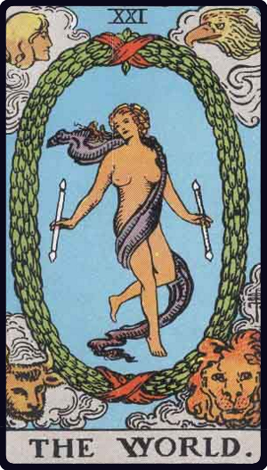

① 出たカード
- カード① 世界（逆位置）
- カード② カップ2（逆位置）
- カード③ カップ7（逆位置）
- バックカード 女教皇（逆位置）
② 彼の今の気持ち
全体的に、関係の停滞や気持ちのすれ違いが強く出ています。
ただし、最初に出た世界逆位置がとても重要です。世界の逆位置は、物事が完全には終わっていない状態を表します。つまり、彼の中ではあなたとの関係に対して、まだ未完了感が残っている可能性があります。
③ それぞれのカードの意味

世界（逆位置）｜カード①
世界は、完成・達成・一区切り・完結を表すカードです。逆位置で出た場合は、完成しきっていない、終わりきっていない、区切りがついていない状態を表します。
恋愛で世界逆位置が出た場合、終わったように見えても、心の中ではまだ完了していないという意味になります。彼は表面的には距離を置いていても、心の奥ではまだあなたとの関係に引っかかりが残っているようです。
- 「もう終わった」と完全に割り切れているわけではない
- どこかで未練や心残りを抱えている

カップ2（逆位置）｜カード②
カップ2は、相思相愛・心の交流・パートナーシップを表すカードです。逆位置になると、気持ちのすれ違い、関係の不調和、距離感のズレを表します。
今回このカードが出ているため、彼はあなたとのつながりに対して、うまく向き合えていないようです。気持ちが完全になくなったというより、今は心の距離ができているという印象です。
- お互いの気持ちが噛み合わない
- 素直になれない
- 関係のバランスが崩れている

カップ7（逆位置）｜カード③
カップ7は、迷い・幻想・選択肢・夢見がちな気持ちを表します。逆位置になると、幻想から覚める、現実を見る、気持ちを整理するという意味になります。
今回このカードが出ているため、彼はあなたとの関係について現実的に考えようとしている可能性があります。ただしこれは必ずしも「完全に諦めた」という意味ではありません。むしろ、期待や理想だけで考えるのをやめて、現実を見ながら気持ちを整理しようとしている状態です。
- 「もう期待しない方がいいのかもしれない」
- 傷つかないために気持ちを落ち着かせようとしている

女教皇（逆位置）BACK
バックカードの女教皇逆位置は、本音を隠すこと、感情の乱れ、冷静さを失うこと、秘密や沈黙を表します。
彼は表面的には冷静に見えるかもしれません。でも内面では、気持ちが揺れていたり、あなたへの本音をうまく扱えていなかったりする可能性があります。
- 「本当は気になる」
- 「でも今さらどうしたらいいか分からない」
- 「自分の本音を見せるのが怖い」
④ 元彼はもう諦めたのか
今回のカードを見る限り、元彼があなたのことを完全に諦めたとは読みにくいです。
世界逆位置は、まだ関係が終わりきっていないことを示しています。カップ2逆位置は、2人の気持ちが噛み合っていない状態を表します。カップ7逆位置は、彼が幻想や期待から離れて、現実的に気持ちを整理しようとしていることを示します。そして女教皇逆位置は、本音を隠していることを表します。
つまり彼は、あなたのことを完全に諦めたというより、「もう無理かもしれない」と自分に言い聞かせながら、気持ちを整理しようとしている状態に近いです。
彼は今、期待することが怖いのかもしれません。また傷つくことや、同じことを繰り返すことを避けたい気持ちもありそうです。そのため、表面的には冷たく見えたり、何も考えていないように見えたりするかもしれません。
でもカード全体を見ると、完全に終わったというより、未完了の気持ちを抱えたまま、どう受け止めればいいのか分からなくなっているように見えます。
まとめ
今回のタロット結果は、元彼があなたを完全に諦めたとは言い切れない内容です。ただし、今の彼は前向きに関係を進める力が弱く、気持ちを閉じている状態です。
世界逆位置が出ているため、彼の中ではまだあなたとの関係が終わりきっていません。カップ2逆位置からは心のすれ違いや距離感が見えます。カップ7逆位置からは、彼が現実を見て気持ちを整理しようとしている様子が分かります。女教皇逆位置からは、本音を隠し、感情を表に出せない状態が読み取れます。
彼はあなたのことを完全に諦めたというより、期待するのが怖くて気持ちを抑えている。まだ未完了感は残っているが、今は素直に動けない状態、と読めます。
前に出ていたペンタクル6正位置や、ルノルマンの手紙＋太陽と合わせると、彼の中にはまだ向き合う余地があり、連絡や歩み寄りの可能性も残っていそうです。